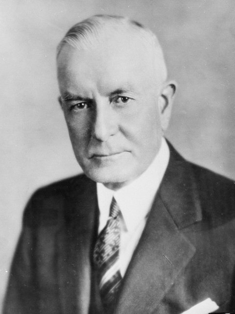

Thomas John Watson Sr. was an American businessman who served as the chairman and CEO of IBM. He oversaw the company's growth into an international force from 1914 to 1956. Watson developed IBM's management style and corporate culture from John Henry Patterson's training at NCR.
| Year | Education |
|---|---|
| 2001-2003 | Ideal Model School |
| 2001-2003 | Ideal Model School |
| 2001-2003 | Ideal Model School |